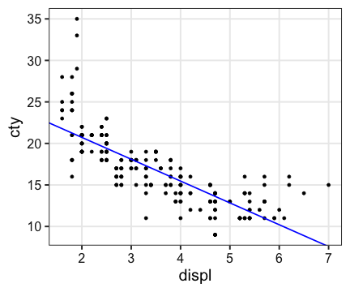
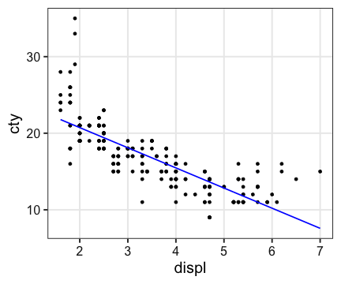
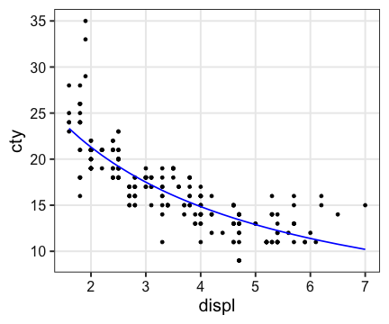
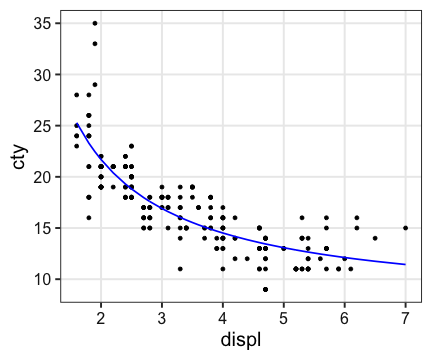
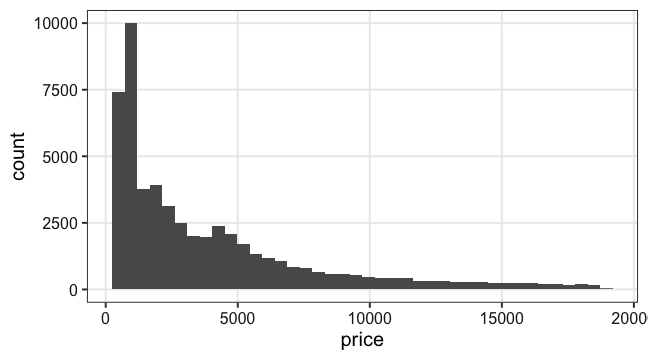
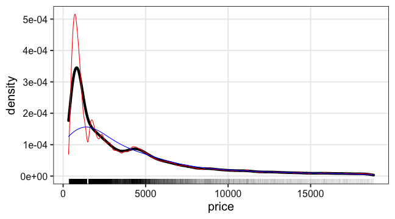
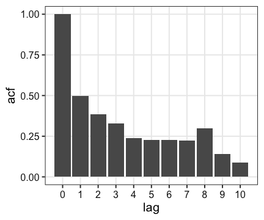

Hands-on Introduction to R 2020
- Why do we use R?
- R basics
- Visualization with R
- Tidying and transforming data with R
- Statistical analysis with R
2020-06-03
Today’s topic
Theoretical background of statistical analysis- How to perform statistical analysis with R
Launch RStudio, and load tidyverse.
library(tidyverse)
Relationship between cty (燃費) & displ (排気量)?
ggplot(mpg) + aes(displ, cty) + geom_point()

Basic form
# Get the result as an object
formula = Y ~ X
model_object = model_function(formula, data = MYDATA)
# View its summary
summary(model_object)
# Get the estimated coefficients
coef(model_object)
where
DATA: data.frame, e.g.,iris,diamonds,mpgY: response variable (a column inDATA), e.g.,ctyX: explanatory variable (a column inDATA), e.g.,displ
General Linear Model (一般線形モデル)
Estimates the coefficients (係数) and intercept (切片).
$\text{cty} = - 2.63 \times \text{displ} + 25.99$
fit = lm(cty ~ displ, data = mpg)
summary(fit)
##
## Call:
## lm(formula = cty ~ displ, data = mpg)
##
## Residuals:
## Min 1Q Median 3Q Max
## -6.3109 -1.4695 -0.2566 1.1087 14.0064
##
## Coefficients:
## Estimate Std. Error t value Pr(>|t|)
## (Intercept) 25.9915 0.4821 53.91 <2e-16 ***
## displ -2.6305 0.1302 -20.20 <2e-16 ***
## ---
## Signif. codes: 0 '***' 0.001 '**' 0.01 '*' 0.05 '.' 0.1 ' ' 1
##
## Residual standard error: 2.567 on 232 degrees of freedom
## Multiple R-squared: 0.6376, Adjusted R-squared: 0.6361
## F-statistic: 408.2 on 1 and 232 DF, p-value: < 2.2e-16
General Linear Model (一般線形モデル)
Estimates the coefficients (係数) and intercept (切片).
$\text{cty} = - 2.63 \times \text{displ} + 25.99$
a = coef(fit)[[1]]
b = coef(fit)[[2]]
ggplot(mpg) + aes(displ, cty) + geom_point() +
geom_abline(intercept = a, slope = b, color = "blue", size = 0.8)

General Linear Model (一般線形モデル)
Estimates the coefficients (係数) and intercept (切片).
$\text{cty} = - 2.63 \times \text{displ} + 25.99$
Y = predict(fit)
ggplot(mpg) + aes(displ, cty) + geom_point() +
geom_line(aes(y = Y), color = "blue", size = 0.8)

General Linear Model (一般線形モデル)
Estimates the coefficients (係数) and intercept (切片).
$\text{cty} = - 2.63 \times \text{displ} + 25.99$
ggplot(mpg) + aes(displ, cty) + geom_point() +
stat_smooth(method = lm, formula = y ~ x, se = FALSE)

Generalized Linear Model (一般化線形モデル)
formula: linear predictor (線形予測子), e.g.,cty ~ displfamily: error structure (誤差構造), e.g.,gaussian,poisson,Gammalink: link function (リンク関数), e.g.,"identity","log","inverse"
LM is a special case of GLM:
glm(..., family = gaussian("identity"))
Generalized Linear Model (一般化線形モデル)
$\log(\text{cty}) = -0.0155 \times \text{displ} + 3.344 + \epsilon$
fit = glm(cty ~ displ, data = mpg, family = Gamma(link = "log"))
summary(fit)
##
## Call:
## glm(formula = cty ~ displ, family = Gamma(link = "log"), data = mpg)
##
## Deviance Residuals:
## Min 1Q Median 3Q Max
## -0.40399 -0.08744 -0.01253 0.07447 0.55328
##
## Coefficients:
## Estimate Std. Error t value Pr(>|t|)
## (Intercept) 3.344162 0.027644 120.97 <2e-16 ***
## displ -0.155497 0.007464 -20.83 <2e-16 ***
## ---
## Signif. codes: 0 '***' 0.001 '**' 0.01 '*' 0.05 '.' 0.1 ' ' 1
##
## (Dispersion parameter for Gamma family taken to be 0.02166931)
##
## Null deviance: 14.4350 on 233 degrees of freedom
## Residual deviance: 4.8065 on 232 degrees of freedom
## AIC: 1069.3
##
## Number of Fisher Scoring iterations: 5
Generalized Linear Model (一般化線形モデル)
$\log(\text{cty}) = -0.0155 \times \text{displ} + 3.344 + \epsilon$
ggplot(mpg) + aes(displ, cty) + geom_point() +
geom_line(aes(y = exp(predict(fit))), color = "blue", size = 0.8)
Generalized Linear Model (一般化線形モデル)
$(\text{cty})^{-1} = 0.010 \times \text{displ} + 0.027 + \epsilon$
fit = glm(cty ~ displ, data = mpg, family = Gamma(link = "inverse"))
summary(fit)
##
## Call:
## glm(formula = cty ~ displ, family = Gamma(link = "inverse"),
## data = mpg)
##
## Deviance Residuals:
## Min 1Q Median 3Q Max
## -0.38558 -0.08389 -0.01432 0.06985 0.51518
##
## Coefficients:
## Estimate Std. Error t value Pr(>|t|)
## (Intercept) 0.026528 0.001471 18.04 <2e-16 ***
## displ 0.010207 0.000461 22.14 <2e-16 ***
## ---
## Signif. codes: 0 '***' 0.001 '**' 0.01 '*' 0.05 '.' 0.1 ' ' 1
##
## (Dispersion parameter for Gamma family taken to be 0.01922307)
##
## Null deviance: 14.4350 on 233 degrees of freedom
## Residual deviance: 4.3425 on 232 degrees of freedom
## AIC: 1045.5
##
## Number of Fisher Scoring iterations: 4
Generalized Linear Model (一般化線形モデル)
$(\text{cty})^{-1} = 0.010 \times \text{displ} + 0.027 + \epsilon$
ggplot(mpg) + aes(displ, cty) + geom_point() +
geom_line(aes(y = 1 / predict(fit)), color = "blue", size = 0.8)

Non-linear Least-Square (非線形最小二乗法)
$\text{cty} = {28.7} / {\text{displ}} + 7.33$
fit = nls(cty ~ k / displ + b, data = mpg, start = list(k = 1, b = 0))
summary(fit)
##
## Formula: cty ~ k/displ + b
##
## Parameters:
## Estimate Std. Error t value Pr(>|t|)
## k 28.7243 1.2000 23.94 <2e-16 ***
## b 7.3309 0.4253 17.24 <2e-16 ***
## ---
## Signif. codes: 0 '***' 0.001 '**' 0.01 '*' 0.05 '.' 0.1 ' ' 1
##
## Residual standard error: 2.29 on 232 degrees of freedom
##
## Number of iterations to convergence: 1
## Achieved convergence tolerance: 7.471e-09
Non-linear Least-Square (非線形最小二乗法)
$\text{cty} = {28.7} / {\text{displ}} + 7.33$
ggplot(mpg) + aes(displ, cty) + geom_point() +
geom_line(aes(y = predict(fit)), color = "blue", size = 0.8)

Model comparison
There are many statistics, e.g., AIC, BIC, WAIC, etc.
fit1 = lm(cty ~ displ, data = mpg) #family = gaussian("identity")
fit2 = glm(cty ~ displ, data = mpg, family = Gamma(link = "log"))
fit3 = glm(cty ~ displ, data = mpg, family = Gamma(link = "inverse"))
fit4 = nls(cty ~ k / displ + b, data = mpg, start = list(k = 1, b = 0))
AIC(fit1, fit2, fit3, fit4)
## df AIC
## fit1 3 1109.336
## fit2 3 1069.301
## fit3 3 1045.469
## fit4 3 1055.754
Model comparison
library(MASS)
full_model = glm(cty ~ displ + cyl + drv + class, data = mpg, family = Gamma(link = "inverse"))
stepAIC(full_model)
## Start: AIC=943.41
## cty ~ displ + cyl + drv + class
##
## Df Deviance AIC
## <none> 2.6029 943.41
## - displ 1 2.6322 943.90
## - drv 2 2.7778 954.27
## - cyl 1 2.9533 971.19
## - class 6 3.1371 976.80
##
## Call: glm(formula = cty ~ displ + cyl + drv + class, family = Gamma(link = "inverse"),
## data = mpg)
##
## Coefficients:
## (Intercept) displ cyl drvf
## 0.018435 0.002071 0.004419 -0.005448
## drvr classcompact classmidsize classminivan
## -0.001596 0.010735 0.011227 0.017691
## classpickup classsubcompact classsuv
## 0.019051 0.008377 0.016891
##
## Degrees of Freedom: 233 Total (i.e. Null); 223 Residual
## Null Deviance: 14.43
## Residual Deviance: 2.603 AIC: 943.4
tidymodels meta-package
For modeling and statistical analysis that share the underlying design philosophy, grammar, and data structures of the tidyverse.
install.packages("tidymodels")
library(tidymodels)
broom package
Transfroms the messy output of R stats functions to tidy data.frames.
Extract results from fit
fit = lm(Sepal.Width ~ Petal.Length + Petal.Width, data = iris)
summary(fit)
##
## Call:
## lm(formula = Sepal.Width ~ Petal.Length + Petal.Width, data = iris)
##
## Residuals:
## Min 1Q Median 3Q Max
## -1.06198 -0.23389 0.01982 0.20580 1.13488
##
## Coefficients:
## Estimate Std. Error t value Pr(>|t|)
## (Intercept) 3.58705 0.09373 38.272 < 2e-16 ***
## Petal.Length -0.25714 0.06691 -3.843 0.00018 ***
## Petal.Width 0.36404 0.15496 2.349 0.02014 *
## ---
## Signif. codes: 0 '***' 0.001 '**' 0.01 '*' 0.05 '.' 0.1 ' ' 1
##
## Residual standard error: 0.3893 on 147 degrees of freedom
## Multiple R-squared: 0.2131, Adjusted R-squared: 0.2024
## F-statistic: 19.9 on 2 and 147 DF, p-value: 2.238e-08
Extract results from fit
fit = lm(Sepal.Width ~ Petal.Length + Petal.Width, data = iris)
tidy(fit)
## # A tibble: 3 x 5
## term estimate std.error statistic p.value
## <chr> <dbl> <dbl> <dbl> <dbl>
## 1 (Intercept) 3.59 0.0937 38.3 2.51e-78
## 2 Petal.Length -0.257 0.0669 -3.84 1.80e- 4
## 3 Petal.Width 0.364 0.155 2.35 2.01e- 2
Tests 仮説検定
chisq.test()
fisher.test()
kruskal.test()
ks.test()
t.test()
var.test()
wilcox.test()
# etc.
See stats package for more details.
Probability distributions 確率分布
# 確率密度関数 (PDF)
dnorm(c(0, 1.96))
## [1] 0.39894228 0.05844094
# 累積分布関数 (CDF)
pnorm(c(0, 1.96))
## [1] 0.5000000 0.9750021
# 累積分布関数の逆関数
qnorm(c(0.5, 0.975))
## [1] 0.000000 1.959964
# 乱数生成
rnorm(4)
## [1] -0.2561510 0.5834819 0.4735194 -1.8780212
計算機の限界に注意
1 - pnorm(...)やlog(pnorm(...))のほうが直感的に分かりやすいので、
lower.tail = FALSEやlog.p = TRUEは不要なようにも思われるが、
これらの引数で内部処理させたほうが浮動小数点型の限界付近での計算が正確。
# complementary
1 - pnorm(10, 0, 1) # 0
pnorm(10, 0, 1, lower.tail = FALSE) # 7.619853e-24
# log
log(pnorm(10, 0, 1)) # 0
pnorm(10, 0, 1, log.p = TRUE) # -7.619853e-24
Discrete 離散
_binom(size, prob)
_geom(prob)
_hyper(m, n, k)
_nbinom(size, prob, mu)
_pois(lambda)
_signrank(n)
_wilcox(m, n)
Continuous 連続
_beta(shape1, shape2)
_cauchy(location = 0, scale = 1)
_chisq(df)
_exp(rate = 1)
_f(df1, df2)
_gamma(shape, rate = 1, scale = 1 / rate)
_lnorm(meanlog = 0, sdlog = 1)
_logis(location = 0, scale = 1)
_norm(mean = 0, sd = 1)
_t(df)
_unif(min = 0, max = 1)
_weibull(shape, scale = 1)
Reference
caret package
for machine learning
stan package
for Bayesian modeling and inference.
牧野研輪読会 補遺
“RとStanではじめる ベイズ統計モデリングによるデータ分析入門” 第2部 第1–3章
ts: time series (時系列型)
2.1.13
vector with labels and print format.
timeser = ts(LETTERS, start = c(2020, 5), freq = 12)
timeser
## Jan Feb Mar Apr May Jun Jul Aug Sep Oct Nov Dec
## 2020 A B C D E F G H
## 2021 I J K L M N O P Q R S T
## 2022 U V W X Y Z
is(timeser)
## [1] "ts" "structure" "oldClass" "vector"
is.character(timeser)
## [1] TRUE
Random Number Generator (乱数生成器)
2.1.15
r + 分布の名前 + (length, parameters, ...)
set.seed(24601) # 乱数シードをセット
# 平均50、標準偏差10の正規分布から5個生成
rnorm(5L, mean = 50, sd = 10)
## [1] 47.43849 55.83482 54.73519 31.21979 47.25679
# もう1回実行すると違う結果
rnorm(5L, mean = 50, sd = 10)
## [1] 43.63798 52.56991 47.42713 37.70879 17.77750
- 疑似乱数
- 内部状態に依存して決定論的に生成される数列。
- 乱数シードは、内部状態を指定する「復活の呪文🏰」
Random Number Generator (乱数生成器)
2.1.15
内部状態が同じなら、生成される乱数も同じ。
set.seed(24601) # 内部状態をリセット
rnorm(5L, 0, 1) # 生成するときに内部状態が変化するけど
## [1] -0.2561510 0.5834819 0.4735194 -1.8780212 -0.2743209
set.seed(24601) # 内部状態をリセット
rnorm(5L, 0, 1) # 同じ結果
## [1] -0.2561510 0.5834819 0.4735194 -1.8780212 -0.2743209
シミュレーションや解析に再現性を求める場合は設定必須。
(どんなシードでも同じ結論になる、が理想ではあるけど)
「ほしい結果が出るような乱数シードを探す」 とかやっちゃダメ絶対‼️
For-loop
2.1.16
Rではほぼ使わないけど、この教科書では使いたいらしい。
for (i in seq(1, 3)) {
print(i)
}
## [1] 1
## [1] 2
## [1] 3
Histogram
2.2.2
連続値をいくつかのbinに区切って数えたもの
ggplot(diamonds) + aes(x = price) +
geom_histogram(bins = 40L)

Kernel Density Estimation (カーネル密度推定)
2.2.3
ヒストグラムを正規分布で滑らかにしたもの
ggplot(diamonds) + aes(x = price) +
geom_rug(size = 0.1, alpha = 0.05) +
geom_density(size = 2) +
geom_density(adjust = 1 / 4, color = "red") +
geom_density(adjust = 4, color = "blue")

Summary Statistics (要約統計量)
2.2.4, 5
# 平均値: 普通の算術平均。tailに引っ張られる。
mean(diamonds[["price"]])
## [1] 3932.8
# 中央値: 順位で真ん中にある値。
median(diamonds[["price"]])
## [1] 2401
# 四分位点: 上位・下位25%にある値。
quantile(diamonds[["price"]], probs = c(0.25, 0.75))
## 25% 75%
## 950.00 5324.25
Correlation (相関)
2.2.6
# Covariance (共分散) > 0 なら、
# carat が大きくなるほど price も大きくなる
cov(diamonds[["carat"]], diamonds[["price"]])
## [1] 1742.765
↑この値だけ見てもその度合いは想像しにくいので、
値が [-1, 1] になるように正規化したものが相関係数↓
cor(diamonds[["carat"]], diamonds[["price"]])
## [1] 0.9215913
結構強い相関だな。
Autocorrelation (自己相関)
2.2.7
時系列データにおいて、n時点前の値との相関を取ったもの。
1次の自己相関 = 1時点前との相関
ac = acf(Nile, lag.max = 10, plot = FALSE) %>% broom::tidy()
ggplot(ac) + aes(lag, acf) + geom_col() + scale_x_continuous(n.breaks = 10L)
